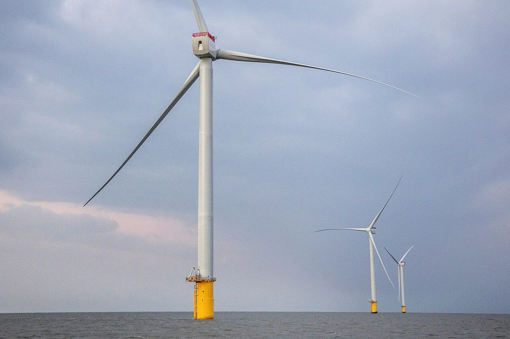
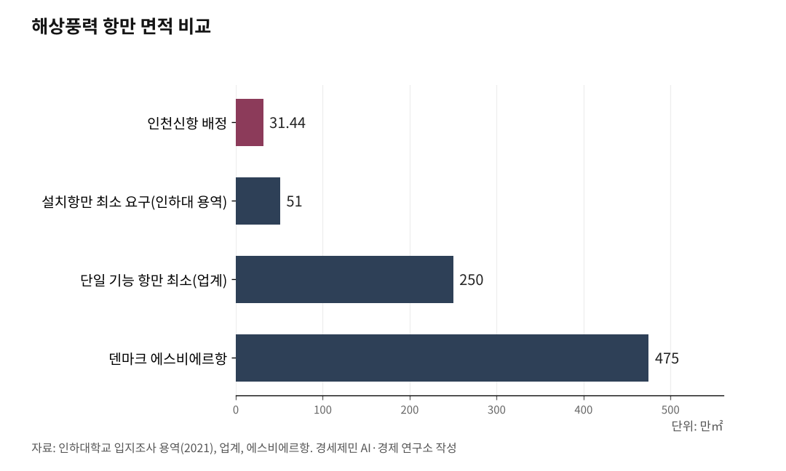

미국 침략 호르무즈 사태, 인천 해상풍력 6.2GW(기가와트) 시급
미국의 이란 침략이 야기한 세계 에너지 비상사태
해상풍력배후항만 영흥도 100만평, 조성 서둘러야
1. 미국의 침략 전쟁, 세계 에너지를 인질로 잡다
2026년 2월 28일, 미국과 이스라엘이 이란을 침략했다. 핵시설 파괴와 반정부 시위 지원을 명분으로 내세웠으나, 개전 직후인 3월 2일 국제원자력기구(International Atomic Energy Agency, IAEA) 사무총장은 이란에 핵무기 제조 프로그램이 없다고 밝혔다. 2003년 이라크 침공 때와 같은 구조다. 명분은 거짓이었고, 전쟁은 현실이 됐다.

이란은 호르무즈 해협 봉쇄로 맞섰다. 전 세계 석유 소비량 5분의 1, 해상 석유 무역량 4분의 1 이상이 이 해협을 경유한다. 침략국이 아닌 전 세계 민간인이 피해를 떠안는 구조가 만들어졌다.
한 달 만에 세계 에너지 질서가 무너졌다. 국제에너지기구(International Energy Agency, IEA)는 3월 11일 역대 최대 규모인 4억배럴의 전략비축유(전쟁이나 재난에 대비해 정부가 비축하는 원유) 방출을 결정했다. 회원국 32개 전체 비축량 12억배럴 가운데 3분의 1에 해당한다.
일본은 IEA 결정에 앞서 단독으로 민간 비축유 15일분과 국가 비축유 1개월분, 합계 8000만배럴을 방출했다. 1978년 관련 제도가 만들어진 뒤 특정 국가가 단독으로 비축유 방출을 결정한 것은 처음이다.
필리핀은 3월 24일 국가 에너지 비상사태를 선포했다. 코로나19 이후 6년 만이다. 비축유가 45일분밖에 남지 않았고, 공공기관은 주 4일제 근무로 전환했다. 항공기 운항 중단 가능성까지 거론됐다.
인도는 세계 2위 LPG(Liquefied Petroleum Gas, 액화석유가스) 소비국으로 수입 60%를 중동에 의존한다. 호르무즈 봉쇄로 전체 식당 5%가 영업을 중단했고, 뭄바이 인근 호텔 20% 이상이 문을 닫았다. 가정에서 장작으로 요리하는 사례까지 보고됐다.
유럽 가스 비축량은 3월말 기준 22~27%로 5년 평균 41%에서 절반 수준이다. 가스 가격이 MWh(메가와트시)당 50유로(약 7만5000원)에서 100유로(약 15만원) 이상으로 폭등할 수 있다는 경고가 나왔다.
영국 이코노미스트는 전쟁이 당장 끝나더라도 에너지 시장 정상화에 최소 4개월이 걸린다고 전망했다. 미국의 침략이 만든 이 재앙은 끝이 보이지 않는다.

2. 한국, 미봉책으로는 못 버틴다
한국은 에너지 94%를 수입에 의존한다. 원유 수입 70~80%가 호르무즈 해협을 경유한다. 미국의 침략 전쟁 한 방에 에너지 수급 구조가 흔들렸다.
정부는 35년 만에 석유 최고가격제를 부활시켰다. 3월 13일 1차, 3월 27일 2차 최고가격제를 잇따라 시행해 휘발유 리터당 1724원, 경유 1713원으로 공급가 상한을 설정했다. 1997년 유가 자유화 이후 28년 만에 정부가 석유 시장에 직접 개입한 것이다.
3월 25일부터는 공공부문 차량 5부제가 의무 시행됐다. 1991년 걸프전 이후 35년 만이다. 이재명 대통령은 민간까지 확대하는 5부제 또는 10부제 도입을 검토하라고 지시했다.
원유 긴급 도입에도 나섰다. 대통령 특사로 UAE를 방문한 강훈식 비서실장이 1800만배럴을 확보했고, 앞서 3월 6일 도입분 600만배럴을 합산하면 총 2400만배럴이다. IEA 공조 비축유 2246만배럴도 방출하기로 했다. 전문가들은 이 물량으로 약 22~25일을 추가로 버틸 수 있다고 분석했다.
그러나 이 모든 조치는 단기 미봉책이다. 고금리, 고물가, 고환율의 3고 현상이 고착화되고 있다. 경제협력개발기구(Organisation for Economic Co-operation and Development, OECD)는 3월 26일 한국 경제성장률 전망을 2.1%에서 1.7%로 대폭 하향 조정했다.
비축유는 시간을 벌 뿐이고, 가격 통제는 시장을 왜곡할 뿐이다. 근본적 해법은 에너지 자립이며, 그 핵심이 재생에너지 전환이다.
3. 인천 해상풍력 6.2GW, 에너지 안보의 핵심 축
인천시는 2030년까지 총 6.2GW 규모의 해상풍력발전단지를 조성한다는 목표를 세웠다. 총사업비 약 31조원이다.
민간 주도 5GW 이상(오스테드 1.6GW, OW코리아 1.2GW, 씨앤아이 레저산업 233.5MW 등)과 공공 주도 1.2GW(한국남동발전 등)가 병행한다. 2024년 8월에는 공공주도 대규모 해상풍력 적합입지 발굴에 따라 목표가 7GW로 상향됐다.
무조건 공공이 좋은 것도, 무조건 민간이 나쁜 것도 아니다. 공공부문은 인프라 구축과 정책 안정성에 강점이 있고, 민간부문은 기술혁신과 사업 속도에 강점이 있다. 둘이 경쟁하면서 보완할 때 시너지가 극대화된다. 인천 해상풍력은 이 구조를 갖추고 있다.
인천은 서해안 해상풍력의 거점이다. 씨앤에어(Sea-Air, 해상-항공) 복합물류 인프라와 경인경제권 전력 소비 최전선이라는 입지를 동시에 갖추고 있다. 영흥화력발전소의 기존 송전망을 활용하면 전력계통 연계 효율도 높일 수 있다.
해상풍력은 단순한 에너지 사업이 아니라 국가 에너지 안보 그 자체다. 호르무즈가 막히든 말든 바람은 분다.
4. 인천신항 10만평으로는 택도 없다
해상풍력 발전기는 한 대당 높이가 230m에 달한다. 너셀(nacelle, 발전기와 기어박스를 담는 수납공간) 중량만 1000톤 이상이다. 블레이드(blade, 바람을 받아 회전하는 날개) 길이는 100m를 넘는다. 이런 초대형 부품을 제작하고, 조립하고, 적치하고, 선적하고, 유지보수하려면 대규모 배후항만이 필수다.
도로 없이 자동차 산업이 불가능하듯, 배후항만 없이 해상풍력 산업은 성립하지 않는다.
현재 인천신항에 배정된 해상풍력 배후항만 면적은 31만4400제곱미터, 약 9만5000평이다. 인하대학교 입지조사 용역(2021년)이 제시한 설치항만 최소 요구 면적인 51만제곱미터(약 15만4000평)에도 미달한다. 해상풍력 업계는 단일 기능만 수행하는 항만도 최소 250만제곱미터(약 75만평) 이상이 필요하다고 지적한다.
해외 사례가 이를 뒷받침한다. 세계 최대 해상풍력 항만인 덴마크 에스비에르(Esbjerg)항은 총면적 475만제곱미터(약 144만평)에 마샬링(marshalling, 대형 부품을 조립하고 적치하는 작업) 전용 면적 75만제곱미터 이상을 확보하고, 프로젝트 60개 이상에서 24GW 이상을 처리했다. 연간 출하 능력은 터빈 300기, 4.5GW 이상이다. 유럽 해상풍력 설비용량의 80%가 이 항만에서 선적됐다.
일본 히비키(響)항은 산업용지 2000ha(약 605만평)를 확보하고 해상풍력 통합센터(생산-설치-O&M(Operation & Maintenance, 운영과 정비))를 목표로 하고 있다.
노르웨이 윈드포트(WindPort)는 1.5GW 단일 프로젝트를 위해 현재 20만제곱미터에서 100만제곱미터(약 30만평)까지 확장할 계획이다.
미국 에너지정책학술지(Energy Policy, 2022)에 발표된 연구를 보면, 1GW 프로젝트에 마샬링 면적만 22ha(약 6만6000평)가 필요하다. 인천 6.2GW를 이 기준으로 환산하면 마샬링 면적만 최소 41만평, 제조시설과 O&M 기지, 부품 보관, 도로와 철도 인프라를 합산하면 면적은 배 이상 늘어난다.
노르웨이 윈드포트 기준(1.5GW에 100만제곱미터)으로 6.2GW를 비례 환산하면 약 413만제곱미터(약 125만평)가 필요하다. 에스비에르 기준(475만제곱미터로 연간 4.5GW 처리) 3분의 2를 갖추려면 약 317만제곱미터(약 96만평)다.
이상을 종합하면, 인천 해상풍력 6.2~7GW를 지원하는 배후항만으로 100만평(약 330만제곱미터)은 과대한 요구가 아니라 합리적 최소 규모다. 에스비에르(144만평)보다 작고, 히비키(605만평)보다 훨씬 작다. 인천신항 10만평은 이 필요 규모 10분의 1에 불과하다. 택도 없다.
인천시는 이미 영흥도로 방향을 선회했다. 에코랜드(영흥도 내 친환경 산업단지) 용지 82만제곱미터(약 24만8000평)와 영흥화력발전소 석탄재 처리장(3처리장 예정지 약 145만제곱미터 포함)을 활용하는 구상이다.
영흥도는 교량 간섭이 없어 WTIV(Wind Turbine Installation Vessel, 해상풍력 전용 설치선) 통항에 제약이 없고, 영흥화력발전소의 기존 송전망을 활용할 수 있어 전력계통 연계 효율성도 높다.
항만은 국가 인프라다. 정부가 선행 투자해서 깔아줘야 민간이 그 위에서 뛴다.
5. 미국의 전쟁이 가르친 교훈, 지금 당장 시작하라
미국의 이란 침략이 증명한 것은 단순하다. 화석연료 의존은 국가 안보의 구멍이다. 남의 나라 전쟁에 우리 에너지가 흔들리는 구조를 끊어야 한다.
인천 영흥도 100만평 해상풍력 배후항만은 선택이 아니라 생존의 문제다. 에스비에르가 석유가스 서비스 허브에서 해상풍력 허브로 전환하는 데 25년이 걸렸다. 우리에게는 그만한 시간이 없다.
전쟁이 끝나도 에너지 시장 정상화에 최소 4개월이 걸린다. 그리고 다음 위기는 반드시 온다.
영흥도 해상풍력 배후항만 100만평 조성을 제4차 항만기본계획에 반영하고, 예산을 확보하고, 착공을 서두르는 것이 급선무다. 6.2GW 해상풍력이 가동되면 중동 원유에 의존하지 않는 자체 전력 생산 기반이 확보된다.
호르무즈가 막혀도 바람은 멈추지 않는다.
참고문헌
·"IEA, 원유 비축분 4억배럴 푼다 역대 최대 규모", 문화일보, 2026.3.11, https://www.munhwa.com/article/11573894
·"연료 공급 위기에 필리핀 국가 에너지 비상사태 선포", 경향신문, 2026.3.25, https://www.khan.co.kr/article/202603251842011/
·"기적 일어나도 정상화 최소 4개월 역사상 최악의 에너지 위기", 머니투데이, 2026.3.23, https://www.mt.co.kr/world/2026/03/23/2026032313513347684
·"오일쇼크 2번+우크라 전쟁 수준 충격 정부, 전쟁 추경 2차 최고가격제로 맞불", 이콘밍글, 2026.3.27, https://econmingle.com/economy/korea-emergency-economy-middle-east-crisis/
·"비축유 208일분은 통계적 착시? 호르무즈 봉쇄에 한국이 버틸 진짜 기한", 이콘밍글, 2026.3, https://econmingle.com/economy/hormuz-strait-blockade-korea-oil-supply-c/
·"반도체 호황 속 한국 경제, 유가 파고 헤쳐나갈까", 아이티인사이트, 2026.3.27, https://www.itinsight.kr/news/441181
·조철희 외, "인천 해상풍력 배후항만 입지조사용역 보고서", 인하대학교, 2021.12
·"인천해상풍력 배후항만 영흥도까지 확장 인천신항 고집 선회", 인천투데이, 2025.9.26, https://www.incheontoday.com/news/articleView.html?idxno=308907
·"Port Esbjerg", Port Alliance, 2024.9.21, https://port-alliance.eu/partners/port-esbjerg/
·"Marshaling ports required to meet US policy targets for offshore wind power", Energy Policy, 2022, https://www.sciencedirect.com/science/article/pii/S0301421522000428
※ 이 기사는 AI 프로그램 클로드를 활용해 작성했습니다.
사진 출처
· [대표사진] 전라남도청 해상풍력산업과, "Jeonnam Offshore Wind Power Shinan Blue Jaeun 20241217 (01).jpg", 위키미디어 공용, 공공누리 제1유형, https://commons.wikimedia.org/wiki/File:Jeonnam_Offshore_Wind_Power_Shinan_Blue_Jaeun_20241217_(01).jpg
※ 이 기사는 인공지능을 활용해 작성했습니다.
관련기사
저작권자 © AI경세제민 무단전재 및 재배포, AI학습 및 활용 금지